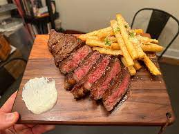

Steak and Frites
Description
Steak and frites is a delicious homemade meal that incorporates restaurant quality technique. Steak and frites is rather
vague in it's description alone which allows for plenty of interpretation. Firstly, choose your favorite cut of beef. For
me, I prefer a New York strip steak but to each their own. Secondly, choice of potatoe allows some freedom. I personally
choose to go with russet potatoes.
Ingredients
- Beef steak
- Potatoes
- Canola oil
- Johnny's Seasoning
- Salt
Steps
- Remove cut of beef from fridge 30 minutes prior to cooking
- Add oil to pan over medium/high heat (oil should at least cover 1" depth of pan
- Slice potatoes into thin cut fries
- Place fries into oil (should instantly hear crackling to be certain oil is hot)
- While fries are cooking season steak with Johnny's seasoning
- Place steak on grill (grill should be at least 400 degrees)
- Allow steak to cook on one side for 5 minutes then flip
- Cook additional 5 minutes and then remove from heat
- Allow steaks to rest 10 minutes before serving
- Once fries rise to top of oil remove
- Season fries with salt
- Place both components on plate and enjoy!